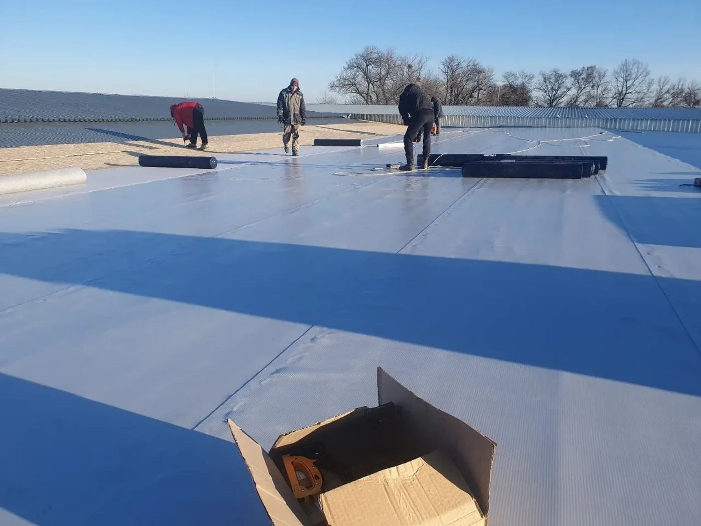
01
ПВХ-мембрана
Монтаж ПВХ-мембраны с механическим креплением и сваркой швов горячим воздухом. Особое внимание к воронкам, парапетам и примыканиям. Именно эти узлы чаще всего требуют точного монтажа.
Подробнее →Работаем с частными домами, складами, ТРЦ, производственными и коммерческими зданиями в Харькове и области. Осматриваем объект, оцениваем конструкции и подбираем техническое решение с учетом типа кровли и особенностей здания.
METROPLEX — кровельная компания в Харькове. Работаем с частными и коммерческими объектами.
Металлочерепица, профнастил, фальц, битумная черепица, ПВХ-мембрана. Материал подбираем после осмотра объекта.

Монтаж ПВХ-мембраны с механическим креплением и сваркой швов горячим воздухом. Особое внимание к воронкам, парапетам и примыканиям. Именно эти узлы чаще всего требуют точного монтажа.
Подробнее →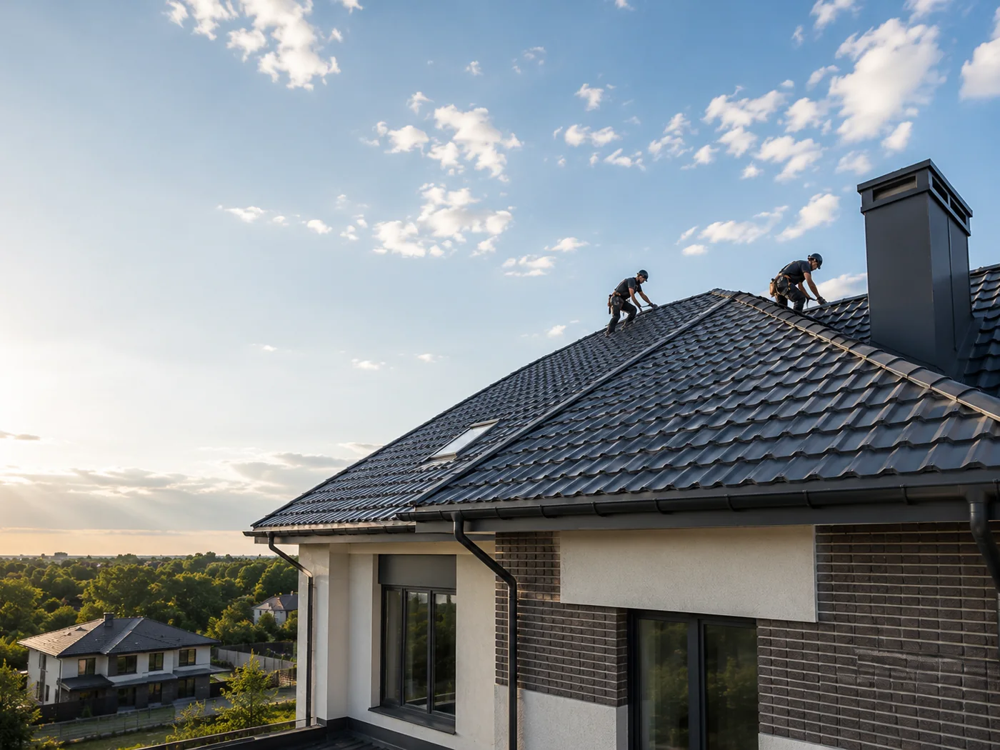
Монтаж скатной кровли с подготовкой основания: гидроветрозащитная мембрана, контробрешётка, обрешётка с правильным шагом под профиль листа, карнизные и торцевые планки, конёк, водосток.
Подробнее →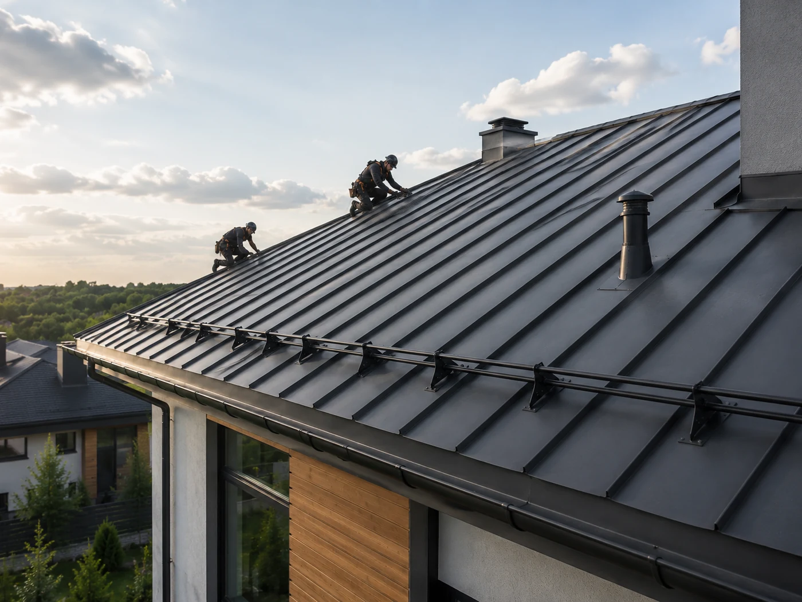
Металлическая кровля для сложной геометрии и современных фасадов. Фальцевое соединение даёт герметичный стык без прокалывания материала. Требует точного выполнения на сложных участках и переходах.
Подробнее →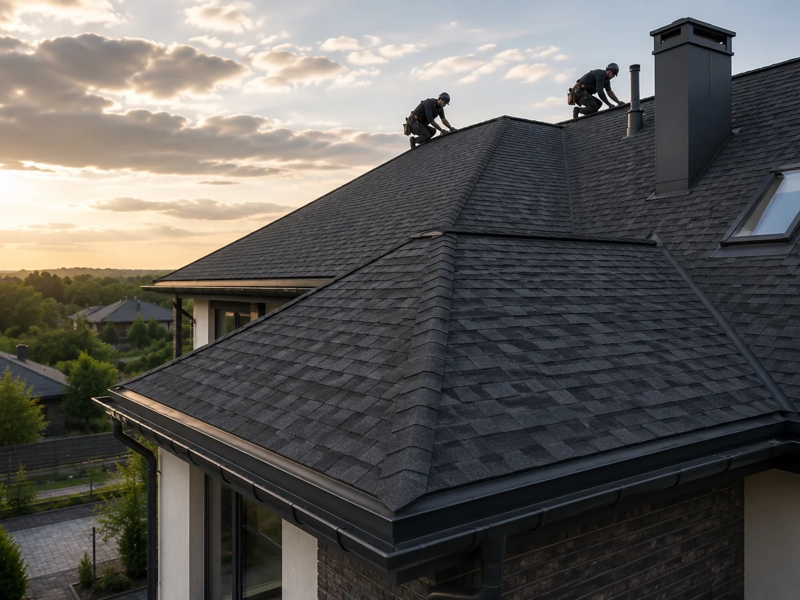
Битумная черепица подходит для скатов разной формы и сложности. Требует сплошного ровного настила, качественной подкладки и аккуратной работы на ендовах, коньке и примыканиях к вертикальным поверхностям.
Подробнее →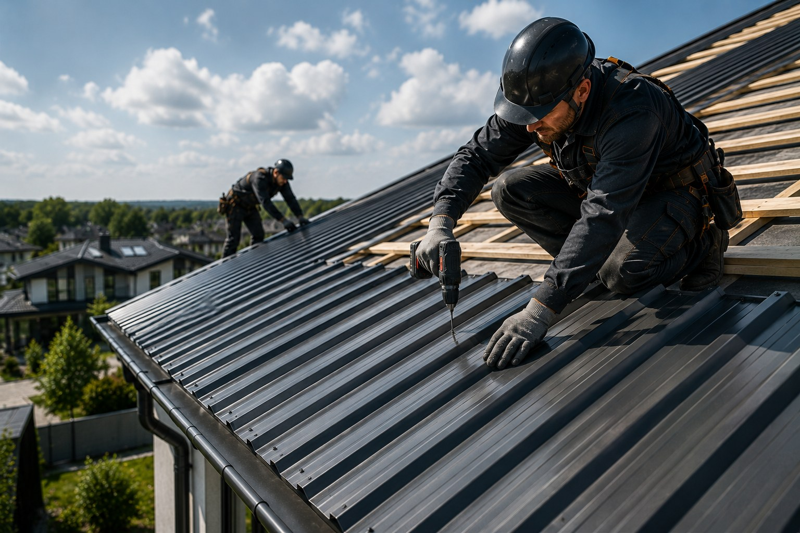
Практичное решение для частных домов, гаражей и хозяйственных построек. Подбираем марку под уклон ската, готовим основание и выполняем все узлы.
Подробнее →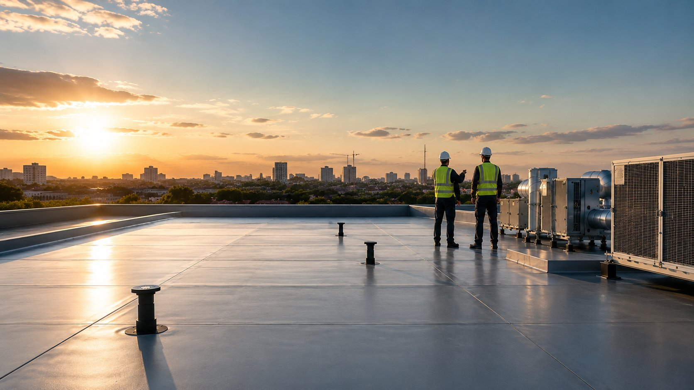
План, кровельный пирог, вентиляция, водоотведение и рабочие узлы до начала монтажа.
Подробнее →Новые кровли для ТРЦ, супермаркетов, производств, цехов, мясокомбинатов, складов и логистических объектов.
Подробнее →На странице работ показаны реальные объекты: коммерческая кровля супермаркета, частная терраса, промышленная кровля и узлы мембранной системы.
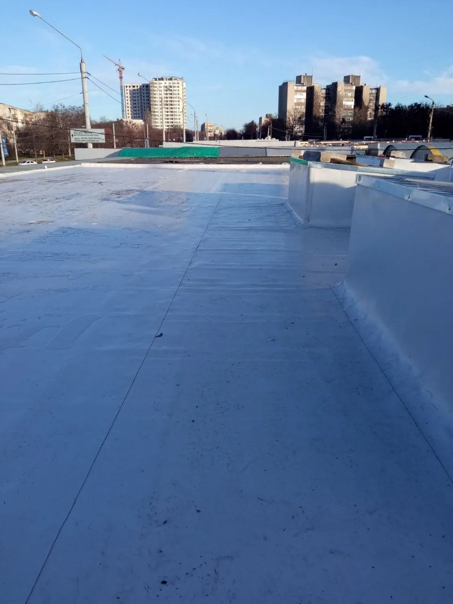
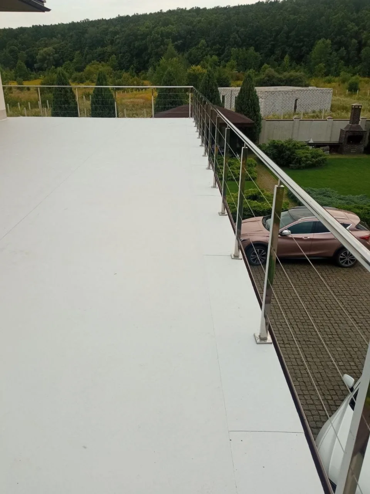
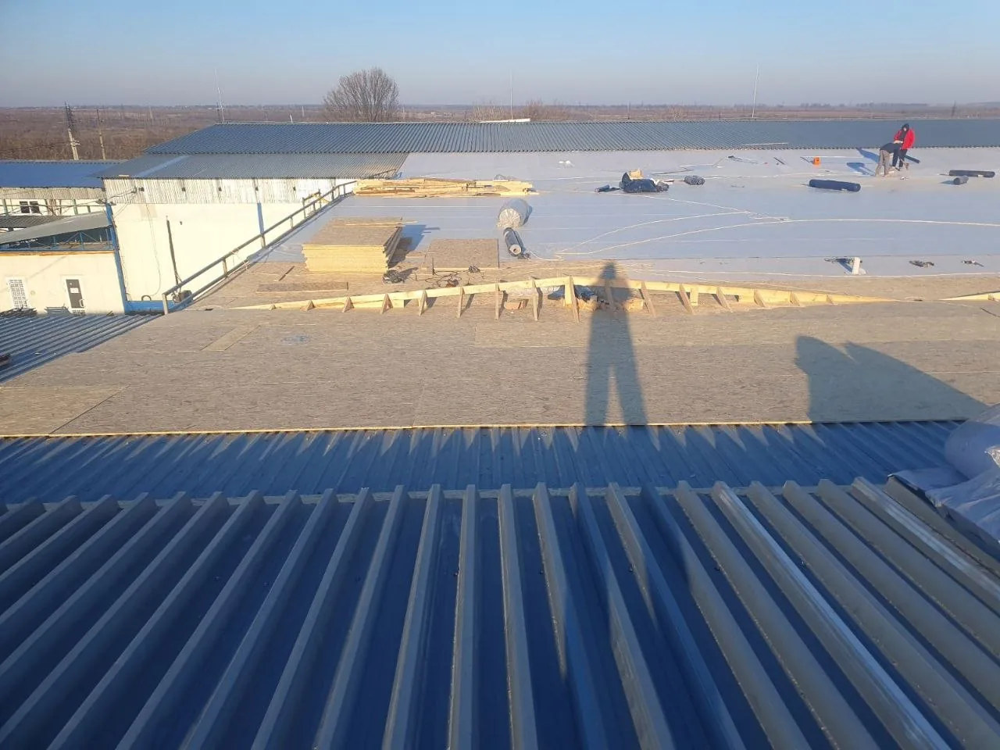
Кровля работает как система. Поэтому оцениваем не только покрытие, но и основание, вентиляцию, примыкания и водоотведение.
Проверяем плоскости скатов, состояние настила и места, где требуется усиление.
Оцениваем приток воздуха через карниз и выход в зоне конька.
Отдельно проверяем дымоходы, стены, вентиляционные выходы и ендовы.
Проверяем карнизы, желоба, воронки и направление отвода воды.
Порядок не меняется: сначала обследование, затем техническое решение, после этого монтаж, и только в конце проверка выполненных узлов. Сокращение любого этапа отражается на результате.
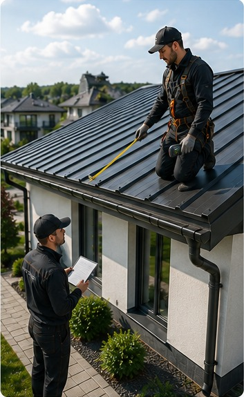
Проверяем геометрию, основание, карнизы, примыкания и водоотведение.
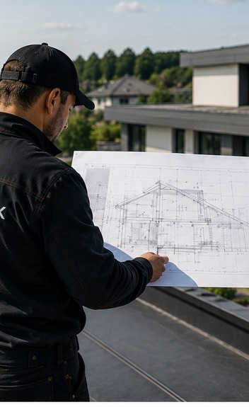
Определяем состав кровельной системы, последовательность работ и ключевые узлы.
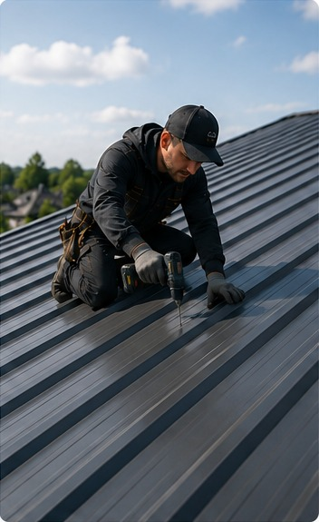
Готовим основание и монтируем покрытие с соблюдением технологии материала.
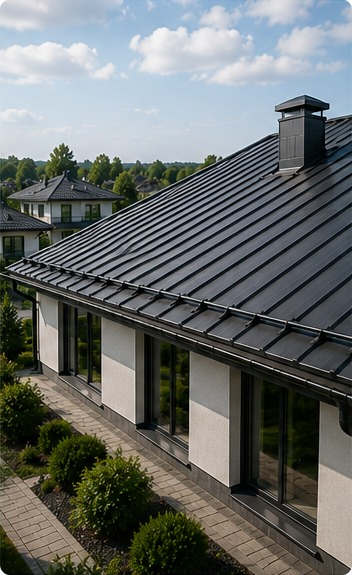
Контролируем конёк, ендовы, примыкания, проходы и водосточную систему.
На частном доме важны геометрия скатов, утепление мансарды, нормальная вентиляция и аккуратные примыкания к стенам и трубам. Без этого через пару зим начнутся проблемы.
Описать объект →Кровли коммерческих объектов имеют свою специфику: воронки и уклоны для отвода воды, проходные элементы для вентиляции и кондиционирования, доступ для технического обслуживания. Неправильно устроенная кровля на складе или производстве означает остановку работы при каждом серьёзном дожде.
Описать объект →Состав работ зависит от площади, геометрии, выбранного материала и состояния существующих конструкций. На объекте проверяем основание, узлы и доступ к скрытым зонам.
Фото дают общее представление о типе кровли и масштабе задачи. Состояние основания, скрытых конструкций и узлов определяется только при личном осмотре.
С весны по осень, при температуре выше нуля и без осадков. При аварийной ситуации рассматриваем варианты независимо от сезона.
Выезжаем на частные и коммерческие объекты в Харькове и рядом: Салтовка, Алексеевка, Павлово Поле, Новые Дома, ХТЗ, Журавлёвка, Песочин, Дергачи, Люботин, Солоницевка и другие направления.
Опыт в проектировании помогает рассматривать кровлю как систему: геометрию, несущие конструкции, утепление, вентиляцию, водоотведение и узлы примыкания. На сайте показываем реальные объекты и фактические этапы работ без выдуманных цифр.
Укажите тип здания, вид кровли и задачу. После короткого разговора определим, нужен ли осмотр объекта. Работаем с кровлями от 70 м².